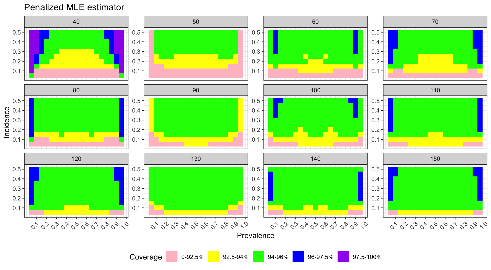
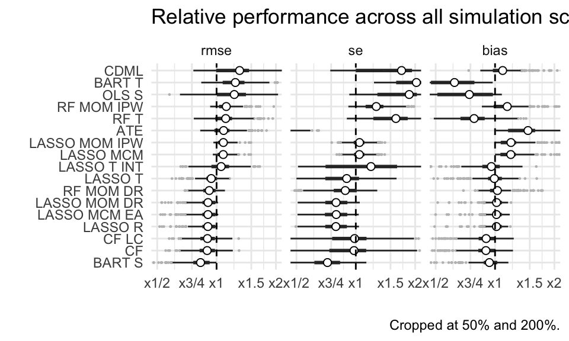
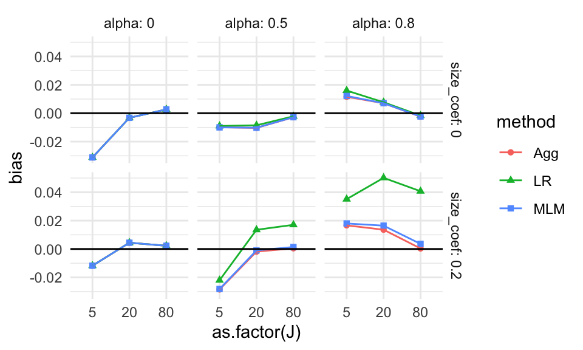

Chapter 14 Case study: A simulation to compare different estimators
In this case study we examine a simulation where we wish to compare different forms of estimator for estimating the same thing. We still generate data, evaluate it, and see how well our evaluation works. The difference is we now evaluate it multiple ways, storing how the different ways work.
For our simple working example we are going to compare estimation of the center of a symmetric distribution via mean, trimmed mean, and median (so the mean and median are the same). These are the three estimation strategies that we might be comparing in a paper (pretend we have “invented” the trimmed mean and want to demonstrate its utility).
We are, as usual, going to break building this simulation evaluation down into lots of functions to show the general framework. This framework can readily be extended to more complicated simulation studies. This case study illustrates how methodologists might compare different strategies for estimation, and is closest to what we might see in the “simulation” section of a stats paper.
14.1 The data generating process
For our data-generation function we will use the scaled \(t\)-distribution so the standard deviation will always be 1 but we will have different fatness of tails (high chance of outliers):
gen.data = function( n, df0 ) {
rt( n, df=df0 ) / sqrt( df0 / (df0-2) )
}The variance of a \(t\) is \(df/(df-2)\), so if we divide our observations by the square root of this, we will standardize them so they have unit variance. See, the standard deviation is 1 (up to random error, and as long as df0 > 2)!:
sd( gen.data( 100000, df0 = 3 ) )## [1] 0.9974364(Normally our data generation code would be a bit more fancy.)
We next define the parameter we want (in our case this is the mean, is what we are trying to estimate):
mu = 014.2 The data analysis methods
We then write a function that takes data and uses all our different estimators on it. We return a data frame of the three estimates, with each row being one of our estimators. This is useful if our estimators return an estimate and a standard error, for example.
analyze.data = function( data ) {
mn = mean( data )
md = median( data )
mn.tr = mean( data, trim=0.1 )
data.frame( estimator = c( "mean", "trim.mean", "median" ),
estimate = c( mn, mn.tr, md ) )
}Let’s test:
dt = gen.data( 100, 3 )
analyze.data( dt )## estimator estimate
## 1 mean -0.006977732
## 2 trim.mean 0.041118938
## 3 median 0.035254949Note that we have bundled our multiple methods into a single function. With complex methods we generally advocate a separate function for each method, but sometimes for a target simulation having a host of methods wrapped in a single function is clean and tidy code.
Also note the three lines of output for our returned value. This long-form output will make processing the simulation results easier. That being said, returning in wide format is also completely legitimate.
14.3 The simulation itself
To evaluate, do a bunch of times, and assess results. Let’s start by looking at a specific case. We generate 1000 datasets of size 10, and estimate the center using our three different estimators.
raw.exps <- replicate( 1000, {
dt = gen.data( n=10, df0=5 )
analyze.data( dt )
}, simplify = FALSE )
raw.exps = bind_rows( raw.exps, .id = "runID" )Note how our .id argument gives each simulation run an ID. This can be
useful to see how the estimators covary.
We now have 1000 estimates for each of our estimators:
head( raw.exps )## runID estimator estimate
## 1 1 mean -0.4413881
## 2 1 trim.mean -0.2796097
## 3 1 median -0.4573288
## 4 2 mean 0.2612034
## 5 2 trim.mean 0.2202813
## 6 2 median 0.251069714.4 Calculating performance measures for all our estimators
We then want to assess estimator performance for each estimator. We first write a function to calculate what we want from 1000 estimates:
estimator.quality = function( estimates, mu ) {
RMSE = sqrt( mean( (estimates - mu)^2 ) )
bias = mean( estimates - mu )
SE = sd( estimates )
data.frame( RMSE=RMSE, bias=bias, SE=SE )
}The key is our function is estimation-method agnostic: we will use it for each of our three estimators. Here we evaluate our ‘mean’ estimator:
filter( raw.exps, estimator == "mean" ) %>%
pull( estimate ) %>%
estimator.quality( mu = mu )## RMSE bias SE
## 1 0.318817 -0.01070817 0.3187965Aside: Perhaps, code-wise, the above is piping having gone too far? If you don’t like this style, you can do this:
estimator.quality( raw.exps$estimate[ raw.exps$estimator=="mean"], mu )## RMSE bias SE
## 1 0.318817 -0.01070817 0.3187965To do all our three estimators, we group by estimator and evaluate for each
estimator. In tidyverse 1.0 summarise can handle multiple responses, but they
will look a bit weird in our output, hence the ‘unpack()’ argument which
makes each column its own column (if we do not unpack, we have a “data frame
column” which is an odd thing).
raw.exps %>%
group_by( estimator ) %>%
summarise( qual = estimator.quality( estimate, mu = 0 ) ) %>%
tidyr::unpack( cols=c(qual) )## # A tibble: 3 × 4
## estimator RMSE bias SE
## <chr> <dbl> <dbl> <dbl>
## 1 mean 0.319 -0.0107 0.319
## 2 median 0.316 -0.00708 0.316
## 3 trim.mean 0.292 -0.00963 0.292We then pack up the above into a function, as usual. Our function takes our two parameters of sample size and degrees of freedom, and returns a data frame of results.
run.simulation = function( n, df0 ) {
raw.exps <- replicate( 1000, {
dt = gen.data( n=n, df0=df0 )
analyze.data( dt )
}, simplify = FALSE )
raw.exps = bind_rows( raw.exps, .id = "runID" )
rs <- raw.exps %>%
group_by( estimator ) %>%
summarise( qual = estimator.quality( estimate, mu = 0 ) ) %>%
tidyr::unpack( cols=c( qual ) )
rs
}Our function will take our two parameters, run a simulation, and give us the results. We see here that none of our estimators are particularly biased and the trimmed mean has, possibly, the smallest RMSE, although it is a close call.
run.simulation( 10, 5 )## # A tibble: 3 × 4
## estimator RMSE bias SE
## <chr> <dbl> <dbl> <dbl>
## 1 mean 0.306 0.00848 0.306
## 2 median 0.309 0.00121 0.309
## 3 trim.mean 0.283 0.00388 0.283Ok, now we want to see how sample size impacts our different estimators. If
we also vary degrees of freedom we have a three-factor experiment, where
one of the factors is our estimator itself. We are going to use a new clever
trick. As before, we use pmap(), but now we store the entire dataframe of
results we get back from our function in a new column of our original
dataframe. See R for DS, Chapter 25.3. This trick works best if we have
everything as a tibble which is basically a dataframe that prints a lot
nicer and doesn’t try to second-guess what you are up to all the time.
ns = c( 10, 50, 250, 1250 )
dfs = c( 3, 5, 15, 30 )
lvls = expand_grid( n=ns, df=dfs )
# So it stores our dataframe results in our lvls data properly.
lvls = as_tibble(lvls)
results <- lvls %>% mutate( results = pmap( lvls, run.simulation ) )We have stored our results (a bunch of dataframes) in our main matrix of simulation runs.
print( results, n=4 )## # A tibble: 16 × 3
## n df results
## <dbl> <dbl> <list>
## 1 10 3 <tibble [3 × 4]>
## 2 10 5 <tibble [3 × 4]>
## 3 10 15 <tibble [3 × 4]>
## 4 10 30 <tibble [3 × 4]>
## # … with 12 more rowsThe unnest() function will stack up our dataframes, replicating the other columns in the main dataframe so it makes a nice rectangular dataset, all nice like. See (hard to read) R for DS Chapter 25.4.
results <- unnest( results, cols="results" )
results## # A tibble: 48 × 6
## n df estimator RMSE bias SE
## <dbl> <dbl> <chr> <dbl> <dbl> <dbl>
## 1 10 3 mean 0.309 -0.0119 0.309
## 2 10 3 median 0.243 -0.0102 0.243
## 3 10 3 trim.mean 0.249 -0.0120 0.249
## 4 10 5 mean 0.320 0.00627 0.320
## 5 10 5 median 0.319 0.0121 0.319
## 6 10 5 trim.mean 0.298 0.00692 0.298
## 7 10 15 mean 0.321 0.00444 0.321
## 8 10 15 median 0.361 0.00925 0.361
## 9 10 15 trim.mean 0.323 0.00801 0.323
## 10 10 30 mean 0.309 -0.00229 0.309
## # … with 38 more rowsAnd plot:
ggplot( results, aes(x=n, y=RMSE, col=estimator) ) +
facet_wrap( ~ df, nrow=1 ) +
geom_line() + geom_point() +
scale_x_log10( breaks=ns )
14.5 Improving the visualization of the results
The above doesn’t show differences clearly because all the RMSE goes to zero. It helps to log our outcome, or otherwise rescale. The logging version shows differences are relatively constant given changing sample size.
ggplot( results, aes(x=n, y=RMSE, col=estimator) ) +
facet_wrap( ~ df, nrow=1 ) +
geom_line() + geom_point() +
scale_x_log10( breaks=ns ) +
scale_y_log10()
Better is to rescale using our knowledge of standard errors. If we scale by the square root of sample size, we should get horizontal lines. We now clearly see the trends.
results <- mutate( results, scaleRMSE = RMSE * sqrt(n) )ggplot( results, aes(x=n, y=scaleRMSE, col=estimator) ) +
facet_wrap( ~ df, nrow=1) +
geom_line() + geom_point() +
scale_x_log10( breaks=ns )
Overall, we see the scaled error of the mean it is stable across the different distributions. The trimmed mean is a real advantage when the degrees of freedom are small. We are cropping outliers that destabilize our estimate which leads to great wins. As the distribution grows more normal, this is no longer an advantage and we get closer to the mean in terms of performance. Here we are penalized slightly bye having dropped 10% of our data, so the standard errors will be slightly larger.
The median is not able to take advantage of the nuances of a data set because it is entirely determined by the middle value. When outliers cause real concern, this cost is minimal. When outliers are not a concern, the median is just worse.
Overall, the trimmed mean seems an excellent choice: in the presence of outliers it is far more stable than the mean, and when there are no outliers the cost of using it is small.
In terms of thinking about designing simulation studies, we see clear visual displays of simulation results can tell very clear stories. Eschew complicated tables with lots of numbers.
14.6 Extension: The Bias-variance tradeoff
We can use the above simulation to examine these same estimators when we the median is not the same as the mean. Say we want the mean of a distribution, but have systematic outliers. If we just use the median, or trimmed mean, we might have bias if the outliers tend to be on one side or another. For example, consider the exponential distribution:
nums = rexp( 100000 )
mean( nums )## [1] 0.9990221mean( nums, trim=0.1 )## [1] 0.83185median( nums )## [1] 0.6940772Our trimming, etc., is biased if we think of our goal as estimating the mean. But if the trimmed estimators are much more stable, we might still wish to use them. Let’s find out.
Let’s generate a mixture distribution, just for fun. It will have a nice normal base with some extreme outliers. We will make sure the overall mean, including the outliers, is always 1, however. (So our target, \(\mu\) is now 1, not 0.)
gen.data.exp = function( n, prob.outlier = 0.05 ) {
nN = rbinom( 1, n, prob.outlier )
nrm = rnorm( n - nN, mean=0.5, sd=1 )
outmean = (1 - (1-prob.outlier)/2) / prob.outlier
outs = rnorm( nN, mean=outmean, sd=10 )
c( nrm, outs )
}Let’s look at our distribution
Y = gen.data.exp( 10000000, prob.outlier = 0.05 )
mean( Y )## [1] 1.000219sd( Y )## [1] 3.271463hist( Y, breaks=30, col="grey", prob=TRUE )
We steal the code from above, modifying it slightly for our new function and changing our target parameter from 0 to 1:
run.simulation.exp = function( n ) {
raw.exps <- replicate( 1000, {
dt = gen.data.exp( n=n )
analyze.data( dt )
}, simplify = FALSE )
raw.exps = bind_rows( raw.exps, .id = "runID" )
rs <- raw.exps %>%
group_by( estimator ) %>%
summarise( qual = estimator.quality( estimate, mu = 1 ) ) %>%
tidyr::unpack( cols = c( qual ) )
rs
}
res = run.simulation.exp( 100 )
res## # A tibble: 3 × 4
## estimator RMSE bias SE
## <chr> <dbl> <dbl> <dbl>
## 1 mean 0.315 0.00185 0.315
## 2 median 0.467 -0.450 0.127
## 3 trim.mean 0.450 -0.436 0.110And for our experiment we vary the sample size
ns = c( 10, 20, 40, 80, 160, 320 )
lvls = tibble( n=ns )results <- lvls %>%
mutate( results = pmap( lvls, run.simulation.exp ) ) %>%
unnest( cols = c(results) )
head( results )## # A tibble: 6 × 5
## n estimator RMSE bias SE
## <dbl> <chr> <dbl> <dbl> <dbl>
## 1 10 mean 1.00 -0.0667 1.00
## 2 10 median 0.603 -0.452 0.399
## 3 10 trim.mean 0.641 -0.384 0.513
## 4 20 mean 0.722 0.0192 0.722
## 5 20 median 0.537 -0.453 0.289
## 6 20 trim.mean 0.505 -0.417 0.285Here we are going to plug multiple outcomes. Often with the simulation study we are interested in different measures of performance. For us, we want to know the standard error, bias, and overall error (RMSE). To plot this we first gather our outcomes to make a long form dataframe of results:
res2 = gather( results, RMSE, bias, SE, key="Measure",value="value" )
res2 = mutate( res2, Measure = factor( Measure, levels=c("SE","bias","RMSE" )))And then we plot, making a facet for each outcome of interest:
ggplot( res2, aes(x=n, y=value, col=estimator) ) +
facet_grid( . ~ Measure ) +
geom_hline( yintercept=0, col="darkgrey" ) +
geom_line() + geom_point() +
scale_x_log10( breaks=ns ) +
labs( y="" )We see how different estimators have different biases and different uncertainties. The bias is negative for our trimmed estimators because we are losing the big outliers above and so getting answers that are too low.
The RMSE captures the trade-off in terms of what estimator gives the lowest overall error. For this distribution, the mean wins as the sample size increases because the bias basically stays the same and the SE drops. But for smaller samples the trimming is superior. The median (essentially trimming 50% above and below) is overkill and has too much negative bias.
From a simulation study point of view, notice how we are looking at three different qualities of our estimators. Some people really care about bias, some care about RMSE. By presenting all results we are transparent about how the different estimators operate.
Next steps would be to also examine the associated estimated standard errors for the estimators, seeing if these estimates of estimator uncertainty are good or poor. This leads to investigation of coverage rates and similar.